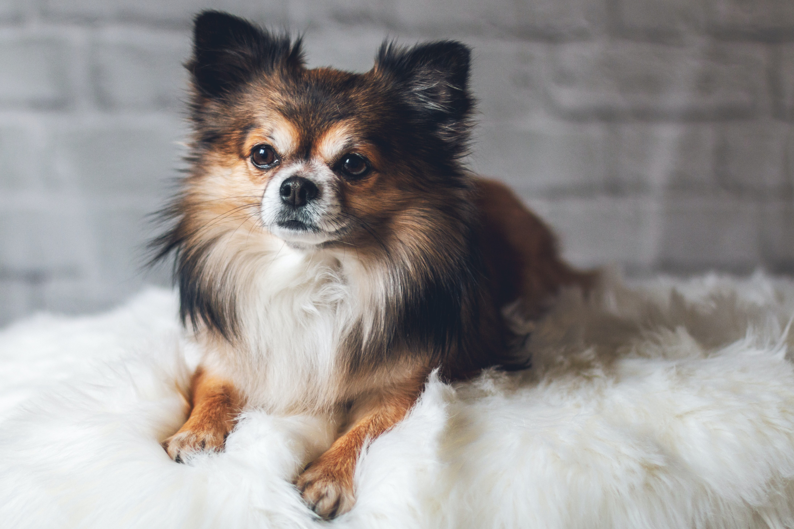
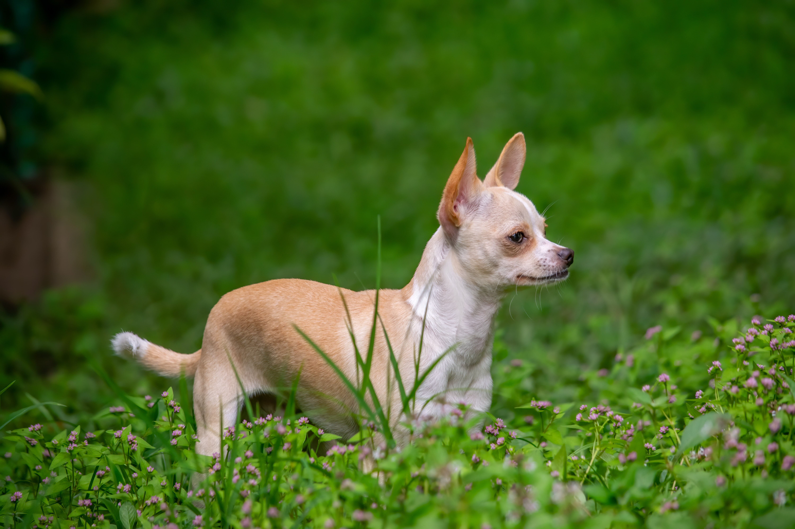

吉娃娃的奧妙
簡介
吉娃娃犬（英文：Chihuahua），世界上最小且極具攻擊性的犬種。
依據毛髮可區分為長毛吉娃娃以及短毛吉娃娃，毛色種類繁多。


Photo by Herbert Goetsch on Unsplash
Photo by Herbert Goetsch on Unsplash
特質
- 細小的體型，以又大又圓的眼睛、豎耳朵及直立的尾巴為特徵。
- 相當長壽，通常壽命可達14年以上
- 因體型較小，容易感到威脅，所以較神經質，時常吠叫。
- 小身形能適應現代生活環境，如公寓以及市區。
歷史
吉娃娃的起源無法確切得知，1850年左右在墨西哥奇瓦瓦州發現，而以該州命名。有一說法認為吉娃娃與阿茲提克文明有關，並在當時成為死者的殉葬寵物。一般認為吉娃娃於19世紀初從墨西哥引進美國，與其他犬種混合交配而成。
俱樂部認證
美國犬業俱樂部認證犬種：玩賞犬
英國犬業俱樂部認證犬種：伴侶犬
影片分享
參考資料
來源1
來源2